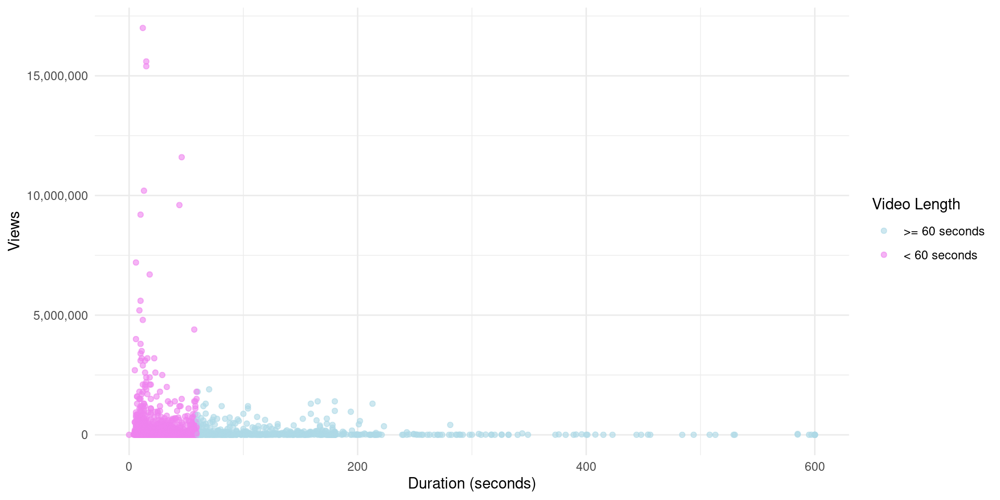
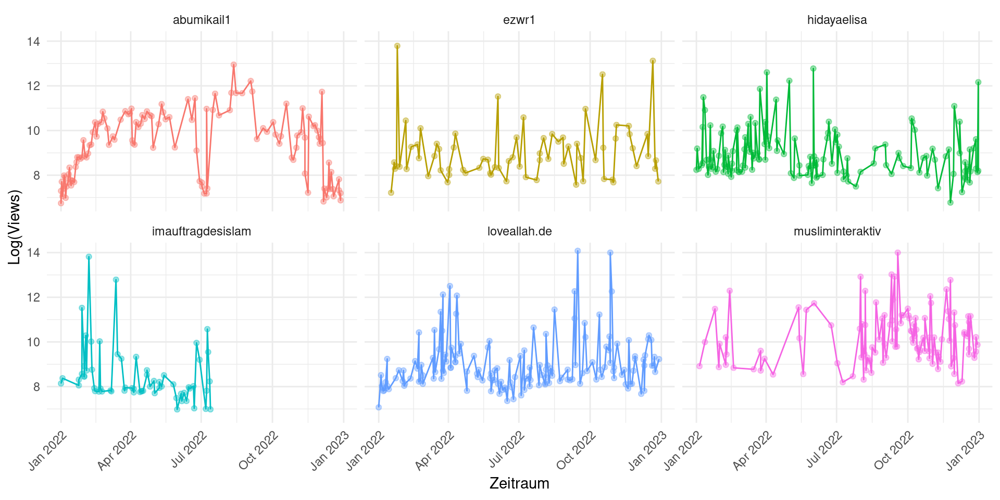
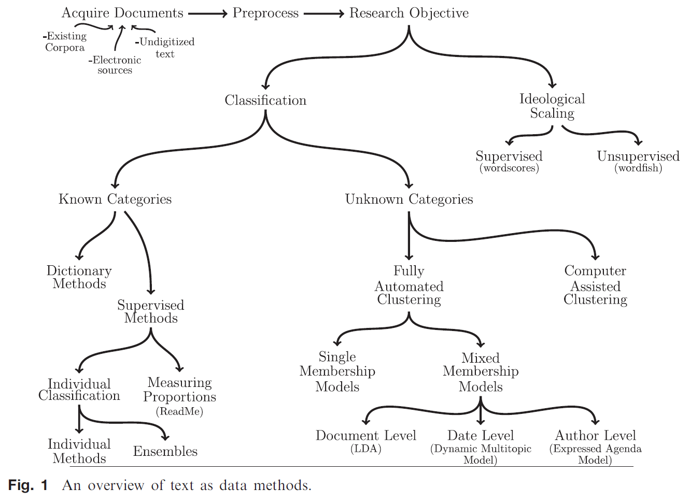
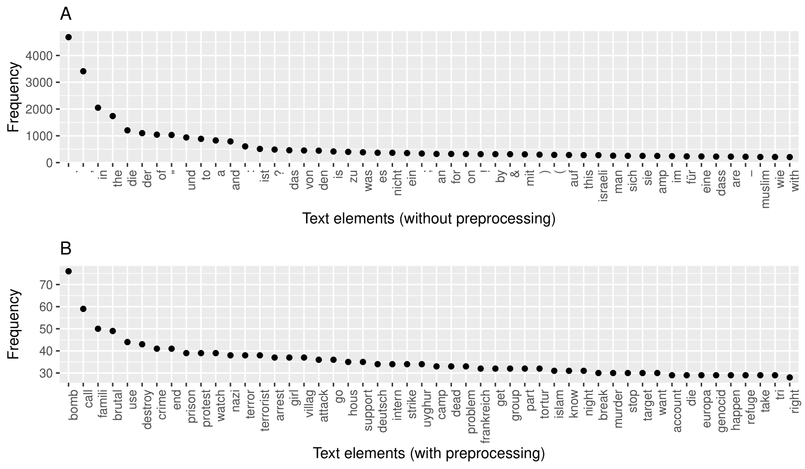
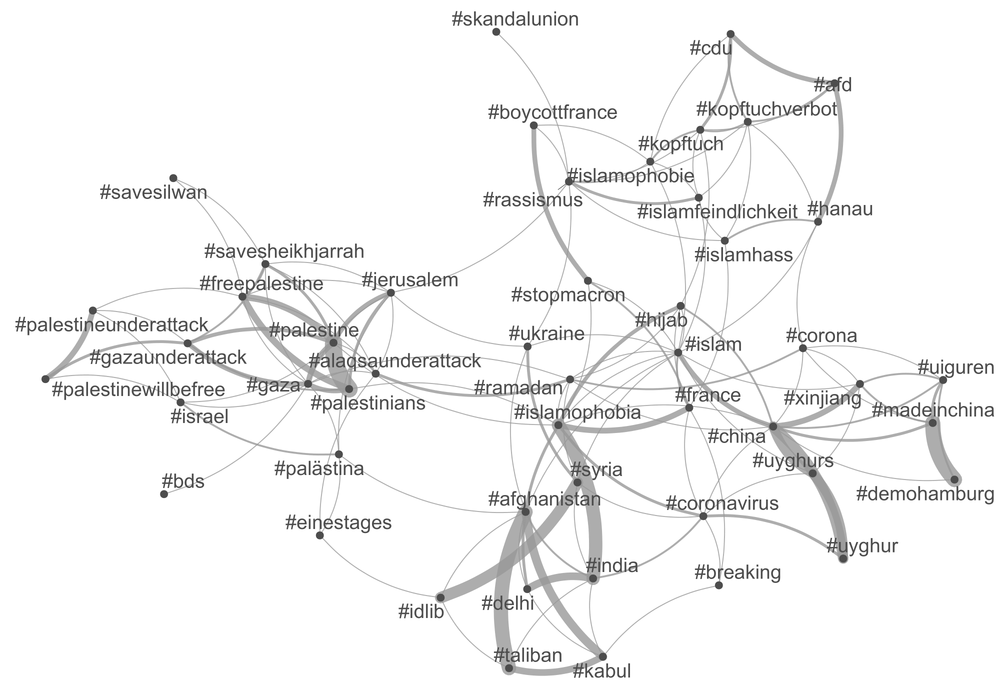
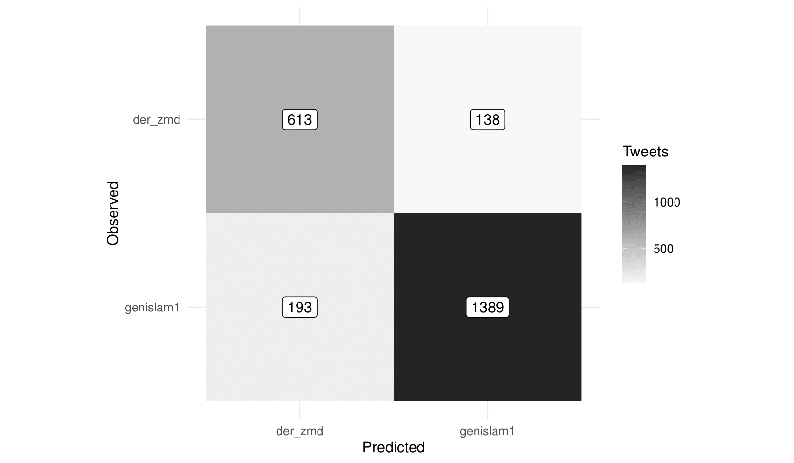
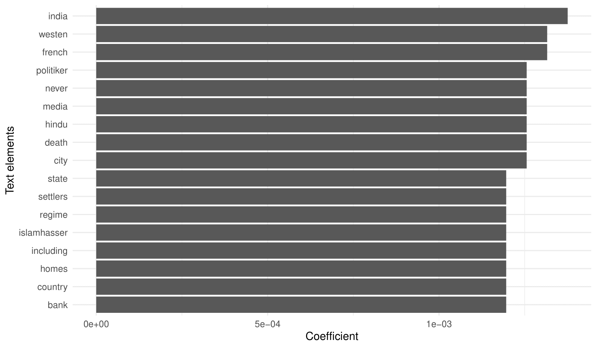
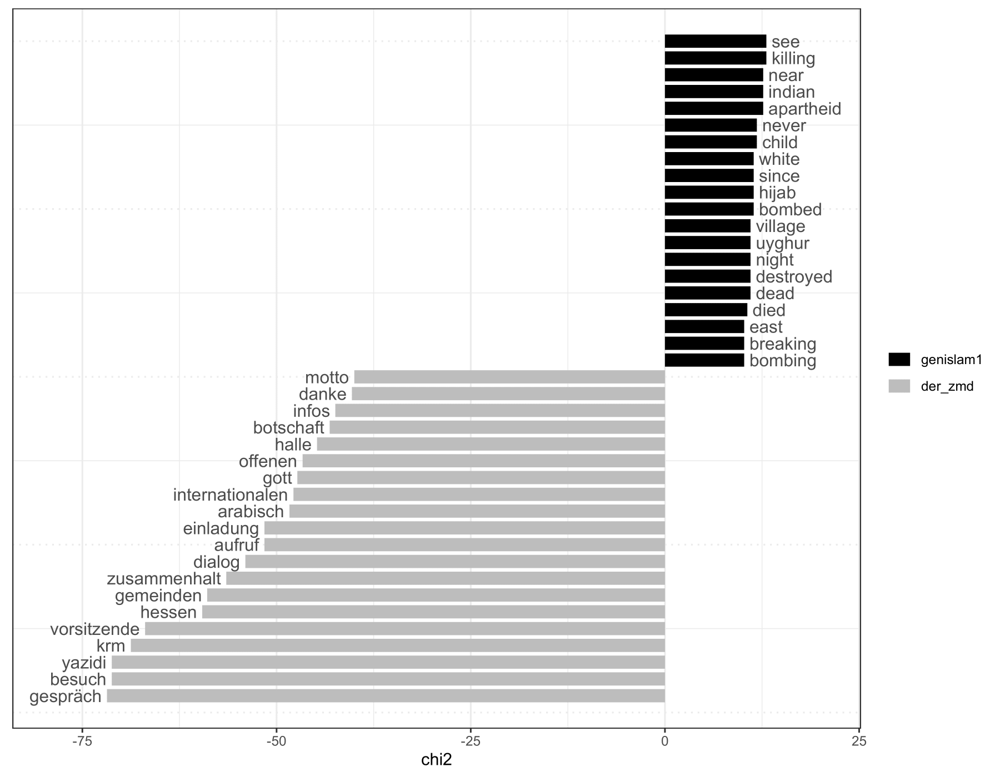
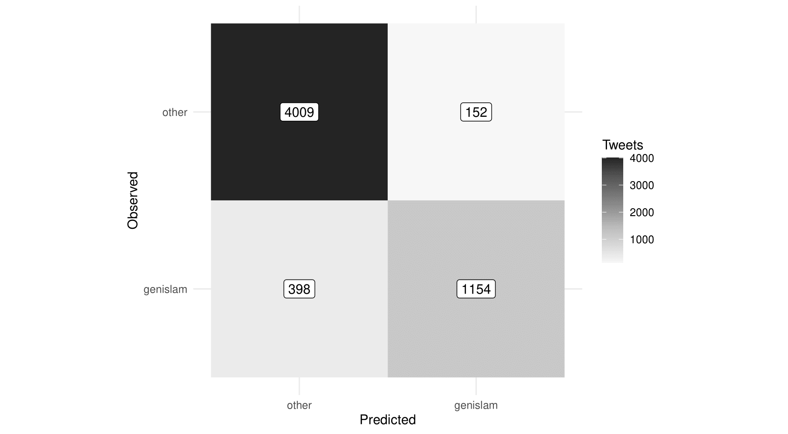

Social Media Data in R?
Nader Hotait
2. August 2024
Inhalt
- Wie kommen wir an Daten?
- Welche Daten kriegen wir?
- Was können wir mit den Daten so machen?
Fokus auf TikTok!
Wie kommen wir an Daten?
Datenzugänge
| Website | Code | Datenbank | |
|---|---|---|---|
| Zugriff | Manuell | Automatisiert (Webscraping) | Automatisiert (Abfrage) |
| Verfügbare Daten | Ausreichend | Ausreichend | Erweitert |
| Datenqualität | Hoch | Mittel bis Hoch | Hoch |
| Schwierigkeit | Einfach | Medium | Einfach bis Schwer |
| Datenvolumen | Niedrig | Groß | Groß |
| Nutzbar für euch? | Ja | Ja | Nein |
Ausnahme: Nutzungsdaten!
Welche Informationen auf Sozialen Medien?
- URLs
- Handles
- Likes
- Views
- Comments
- Shares
- Duration
- Description, Hashtags, Tags
- Sound
- Date
Welche Informationen auf Sozialen Medien?
- URLs: Quelle, Referenzierbarkeit
- Handles: Adressat, Referenzierbarkeit
- Likes: Popularität
- Views: Popularität, Sichtbarkeit
- Comments: Interaktionen, Popularität
- Shares: Popularität, Weitergabe
- Duration: Inhalt-Dauer Zusammenhang
- Description, Hashtags, Tags: Inhalt, Beschreibung, Diskurse, Netzwerke
- Sound: Diskurse, Künstlerische Untermauerung
- Date: Zeitlicher Kontext
Beispiel: Donald Trump on TikTok
Wie kriegen wir die Daten jetzt?
- Entwicklung von Webscraper über R oder Python mit Selenium
- Zeitaufwending
- Wenig Referenzprojekte vorhadnen
- Webscraping mit Dienstleister
- Weniger Flexibilität
- Meist Kosten
- Aber: Einfacher für euch!
Webscraping mit Dienstleister
Unser Datensatz
Unser Datensatz
# A tibble: 6 × 4
Page_URL post_likes post_comments post_saved
<chr> <chr> <chr> <chr>
1 https://www.tiktok.com/@realdonaldtrump/v… 392.2K 10.2K 21.4K
2 https://www.tiktok.com/@realdonaldtrump/v… 616.7K 12.7K 34.7K
3 https://www.tiktok.com/@realdonaldtrump/v… 1.5M 29.3K 104.2K
4 https://www.tiktok.com/@realdonaldtrump/v… 694K 14.4K 48.3K
5 https://www.tiktok.com/@realdonaldtrump/v… 7.9M 126.6K 598.8K
6 https://www.tiktok.com/@realdonaldtrump/v… 5.2M 66.9K 334.2K # A tibble: 6 × 7
views description.y tags links account_follows account_follower account_likes
<chr> <chr> <chr> <chr> <chr> <chr> <chr>
1 6M 100 days lef… @Jak… <NA> 2 9.4M 25.7M
2 6.5M with #sti… @Tea… 2 9.4M 25.7M
3 14M KAMALA, YOU’… <NA> <NA> 2 9.4M 25.7M
4 74.8M We love you … <NA> Supp… 2 9.4M 25.7M
5 80.2M No Tax on Ti… <NA> <NA> 2 9.4M 25.7M
6 157M Face off with @Log… drop… 2 9.4M 25.7M Nutzungsdaten auf TikTok
Verarbeitung von Nutzungsdaten
library(jsonlite)
library(purrr)
library(lubridate)
user_data <- fromJSON("user_data.json")
glimpse(user_data)List of 9
$ Activity :List of 14
..$ Favorite Effects : Named list()
..$ Favorite Hashtags :List of 1
.. ..$ FavoriteHashtagList: NULL
..$ Favorite Sounds :List of 1
.. ..$ FavoriteSoundList: NULL
..$ Favorite Videos :List of 1
.. ..$ FavoriteVideoList: NULL
..$ Follower List :List of 1
.. ..$ FansList:'data.frame': 2 obs. of 2 variables:
..$ Following List :List of 1
.. ..$ Following:'data.frame': 10 obs. of 2 variables:
..$ Hashtag : Named list()
..$ Like List :List of 1
.. ..$ ItemFavoriteList:'data.frame': 304 obs. of 2 variables:
..$ Login History :List of 1
.. ..$ LoginHistoryList:'data.frame': 58 obs. of 6 variables:
..$ Purchase History : Named list()
..$ Search History :List of 1
.. ..$ SearchList:'data.frame': 13 obs. of 2 variables:
..$ Share History :List of 1
.. ..$ ShareHistoryList:'data.frame': 2 obs. of 4 variables:
..$ Status :List of 1
.. ..$ Status List:'data.frame': 1 obs. of 7 variables:
..$ Video Browsing History:List of 1
.. ..$ VideoList:'data.frame': 1161 obs. of 2 variables:
$ Ads and data :List of 3
..$ Ad Interests :List of 1
.. ..$ AdInterestCategories: chr ""
..$ Ads Based On Data Received From Partners :List of 2
.. ..$ DataPartnerList: chr ""
.. ..$ AdvertiserList : chr ""
..$ Usage Data From Third-Party Apps And Websites: Named list()
$ App Settings :List of 2
..$ Block : Named list()
..$ Settings:List of 1
.. ..$ SettingsMap:List of 16
$ Comment :List of 1
..$ Comments: Named list()
$ Direct Messages:List of 1
..$ Chat History:List of 1
.. ..$ ChatHistory: Named list()
$ Profile :List of 1
..$ Profile Information:List of 1
.. ..$ ProfileMap:List of 9
$ Tiktok Live :List of 4
..$ Go Live History : Named list()
..$ Go Live Settings :List of 1
.. ..$ SettingsMap:List of 11
..$ Watch Live History : Named list()
..$ Watch Live Settings:List of 3
.. ..$ WatchLiveSettingsMap :List of 2
.. ..$ MostRecentModificationTimeInApp: chr "1660529019690"
.. ..$ MostRecentModificationTimeInWeb: chr "0"
$ Tiktok Shopping:List of 11
..$ Communication History : Named list()
..$ Current Payment Information:List of 1
.. ..$ PayCard: NULL
..$ Customer Support History : Named list()
..$ Order Dispute History : Named list()
..$ Order History : Named list()
..$ Product Browsing History : Named list()
..$ Product Review History : Named list()
..$ Return and Refund History : Named list()
..$ Saved Address Information :List of 1
.. ..$ SavedAddress: NULL
..$ Shopping Cart List :List of 1
.. ..$ ShoppingCart: NULL
..$ Vouchers :List of 1
.. ..$ Vouchers: NULL
$ Video :List of 1
..$ Videos: Named list()Verarbeitung von Nutzungsdaten
video_list <- user_data[["Activity"]][["Video Browsing History"]][["VideoList"]]
video_list$Date <- ymd_hms(video_list$Date)
head(video_list) Date VideoLink
1 2022-08-16 12:53:30 https://www.tiktokv.com/share/video/7128382140387036421/
2 2022-08-16 12:53:30 https://www.tiktokv.com/share/video/7131424863759158533/
3 2022-08-16 12:53:18 https://www.tiktokv.com/share/video/7125796582599052549/
4 2022-08-16 12:53:03 https://www.tiktokv.com/share/video/7109848649676410117/
5 2022-08-16 12:52:57 https://www.tiktokv.com/share/video/7132098866878500101/
6 2022-08-16 12:52:46 https://www.tiktokv.com/share/video/7131125515900947718/Was kann ich mit den Daten so machen?
- Quantitative Analyse:
- Deskriptive Statistik (Uni- und Multivariat)
- Harmonisierung mit externen Datenquellen
- Quantitative Textanalyse (Natural Language Processing)
- Machinelles Lernen, Big Data Analysen usw.
- Qualitative Analyse
- Transkription Audio-Visueller Inhalte
- Kodierung und Interpretation der Inhalte
- Mixed-Methods
- Quantifizierung von Kodierungen
- Gegenüberstellung verschiedener Daten (Kodierungen, Likes, Views, usw.)
Beispiel 1 (MuzTok)
| Gender | Accounts | Videos | Avg.Videos | Avg.Views | Avg.Likes |
|---|---|---|---|---|---|
| All | 43 | 2983 | 69 | 11.3M | 962.9K |
| couple | 2 | 131 | 66 | 107.5M | 6.7M |
| female | 6 | 406 | 68 | 7.3M | 645.6K |
| male | 33 | 2345 | 71 | 6.6M | 677.1K |
| unknown | 2 | 101 | 50 | 5.4M | 907.9K |
Deskriptive Statistik I
muztok_df <- read_excel("muztok_df.xlsx")
p_1 <- muztok_df %>%
mutate(
point_color = ifelse(duration_sec < 60, "violet", "lightblue")
) %>%
ggplot(aes(x = duration_sec, y = views)) +
geom_point(aes(color = point_color), alpha = 0.6) +
scale_color_manual(
values = c("violet" = "violet", "lightblue" = "lightblue"),
labels = c(">= 60 seconds", "< 60 seconds")) +
scale_y_continuous(labels = label_comma()) +
theme_minimal() +
labs(color = "Video Length", x = "Duration (seconds)", y = "Views")Deskriptive Statistik I
Deskriptive Statistik II (Aktivitätsmuster I)
actors <- c("abumikail1", "adnanomar56", "ezwr1", "hasanatsammler",
"imauftragdesislam", "musliminteraktiv", "loveallah.de", "hidayaelisa")
p_2 <- muztok_df %>%
filter(user.y %in% actors) %>%
ggplot(., aes(x = date, y = log(views), color = user.y)) +
geom_line() +
geom_point(alpha = 0.4) +
theme_minimal() +
theme(legend.position = "none", axis.text.x = element_text(angle = 45, hjust = 1)) +
labs(x = "Zeitraum", y = "Log(Views)") +
facet_wrap(vars(user.y))Deskriptive Statistik II (Aktivitätsmuster I)
Deskriptive Statistik II (Aktivitätsmuster II)
Textanalyse
Beispiel 2 - Twitter Daten
| Organization | Twitter handle | Retrieved tweets | Period |
|---|---|---|---|
| Generation Islam | @genislam1 | 3132 | 22/07/2019 - 19/04/2022 |
| Zentralrat der Muslime in Deutschland | @der_zmd | 1534 | 16/05/2016 - 22/04/2022 |
| Bundesverband der “Türkisch-Islamischen Union der Anstalt für Religion” | @DITIBkoln | 978 | 28/02/2012 - 27/04/2022 |
| Jugendorganisation der “Islamischen Gemeinschaft Millî Görüş” | @igmggenclik | 3200 | 24/09/2016 - 27/04/2022 |
| Islamrat für die Bundesrepublik Deutschland | @Islamratbrd | 1246 | 27/09/2013 - 27/04/2022 |
| Alhambra-Gesellschaft | @Alhambra_eV | 1335 | 26/10/2017 - 27/04/2022 |
Code findet ihr unter: https://nader-hotait.github.io/posts/2022/05/blog-post-1/
Pre-Processing
Unknown Categories I - Co-Occurances
Unknown Categories I - Co-Occurances
Unknown Categories I - Topic Modelling
| Topic # | Topic Proportions | Top Words |
|---|---|---|
| 1 | 9% | get, know, face, need, boy, demolish, call, offic, border, around |
| 2 | 15% | bomb, crime, call, terrorist, strike, dead, tortur, night, want, stop |
| 3 | 20% | deutsch, macht, regierung, millionen, viel, kommt, weiß, wert, sieht, ihrem |
| 4 | 16% | europa, frankreich, kopftuch, eltern, flüchtling, neue, problem, islamfeindlichkeit, kampf, cdu |
| 5 | 6% | use, support, uyghur, famili, target, brother, live, pleas, accus, stand |
| 6 | 7% | prison, part, account, islam, state, news, ban, claim, leader, victim |
| 7 | 5% | artikel, tage, westlich, extremist, generat, ahmad, ersten, kurz, youtub, rechten |
| 8 | 7% | destroy, watch, arrest, girl, attack, camp, group, right, show, human |
| 9 | 5% | brutal, protest, villag, murder, imam, intern, muhammad, isra, religion, assault |
| 10 | 9% | palästina, nazi, palästinens, nachdem, zionistisch, weiter, wohl, geschicht, zionistischen, gewalt |
Known Categories I - Naive Bayes
Known Categories I - Naive Bayes
Keyness
Known Categories II - Glmnet
Weitere Möglichkeiten
- In R:
- Sentiment Analysis
- Implementierung von OpenAI funktionen (openai)
- Latent Semantic Analysis (LSA)
- Lexical dispersion
- Wordfish
- Außerhalb:
- GPT Modelle
- BERD Modelle
- …
- Nutzung von Dokumentvariablen
- Akteur und Term Use
- Themen und Sentiments über Zeit
Wie nutze ich das in meiner Forschung?
- Sampling von Akteuren und Videos
- Explorative Studien
- Online Studien
- Deskriptive Forschung
- Kausale Fragestellungen
- Mixed Methods
Beispiel: German Female Muslim Content Creators
| Data | Videos | Start | Stop | Views (±95% CI) | Likes (±95% CI) | Comments (±95% CI) |
|---|---|---|---|---|---|---|
| All | 8936 | ’19-09-28 | ’23-12-23 | 173,716 (±17.1K) | 15,161 (±1,489) | 202 (±23) |
| Sample | 320 | ’20-03-11 | ’23-12-21 | 147,061 (±35.7K) | 18,123 (±4,860) | 173 (±69) |
Beispiel
| Main Topic | n | Video Format | n | Content Type | n |
|---|---|---|---|---|---|
| Personal and Social Life | 103 | Music | 186 | Presentation | 54 |
| Beauty, Style, and Fashion | 70 | Audio Templates | 32 | Comedy | 49 |
| Religious and Theological Topics and Knowledge | 63 | Reply (Comment) | 26 | Diashow | 44 |
| Promotion, Tips, Commerce, Inspiration | 62 | Image Blending | 13 | Vlog Formats/Impressions | 43 |
| Social Justice and Political Advocacy | 50 | Stitches | 13 | Text-Commented Video | 29 |
| Cultural-Religious Identity and Life | 42 | Green Screening | 10 | Storytelling | 28 |
| Hijab and Life as a Hijabi | 39 | Filters | 5 | Dialogue/Acting | 25 |
| Self(re-)presentation | 14 | Slideshow | 2 | Singalong | 18 |
| MISC | 11 | Dance/Choreography | 17 | ||
| Tutorial | 14 | ||||
| Speakalong | 8 | ||||
| Cooking Show | 4 | ||||
| Challenge | 3 | ||||
| Poetry Slam | 2 | ||||
| Singing | 2 | ||||
| Interview | 1 |
Beispiel